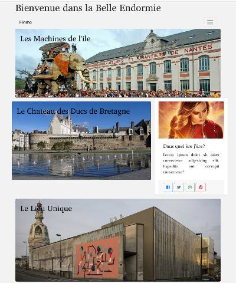
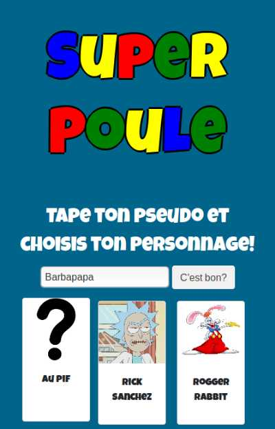
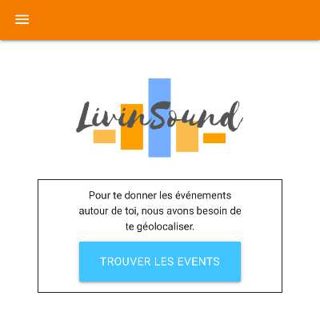
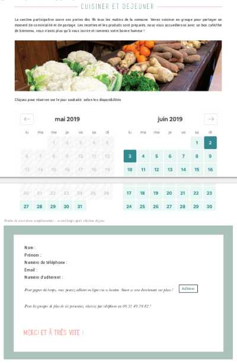

Maelenn Sallic
Développeuse Web et Mobile
Je suis développeuse junior formée à la Wild Code School de Nantes en 2019. Contrôleuse de gestion dans ma première vie professionnelle, je suis formée sur les technologies Javascript et ReactJS pour l'essentiel, dans une dynamique Agile.
Je recherche une première expérience professionnelle à partir d'août 2019 incluant Front et Back dans la région de Brest/Quimper, pour mettre en pratique ces acquis et continuer à développer mes compétences.


Technologies
-
HMTL5
-
CSS3
-
Javascript ES6
-
React/Redux
-
Node/Express
-
MySql
-
Linux
-
GitHub
-
Git
-
Trello
Portfolio
-
Blog Photo Nantes
30 hours / 4 persons / static website, after 1 week training
HTML, CSS, Bootstrap
-
Super Poule
24 hours / 5 persons / Easter eggs hunting Plateform Game, as Mario Bros, developped during a 24 hours hackathon, after 2 months training.
HTML, CSS, Bootstrap, JavaScript, Phaser
-
Livin'Sound
80 hours / 5 persons / Web & Mobile application, locate the user, display all the musical events around and save our favorites events. After 2 months training.
HTML, CSS, JavaScript, React, Materialize, API consumption
-
La cocotte solidaire - EN COURS
6 weeks / 4 persons / online booking to workshops + admin management for phone bookings. Futur partners should be able to implement the booking component on their own websites
HTML, CSS, JavaScript, React, Redux, API creation, MySql, databases
Expériences
2015-2019 :
STEF Logistique - région de Paris
Contrôleuse de gestion multisites
2012-2015 :
STEF Transport - Nantes
Responsable d'équipe & Contrôleuse de gestion
2011-2012 :
GEMO - St Pierre Montlimart
Contrôleuse de gestion achats
2008-2011 :
DECATHLON - Nantes
Contrôleuse Financière Région
2007-2008 :
DECATHLON - Nantes
Gestionnaire Administratif et Financier
En lien avec les équipes opérationnelles et l'encadrement des plateformes: Fiabilisation des données, Reportings de gestion et Tableaux de bord, Analyse et pilotage de masse salariale. Suivi des écarts budgétaires et actions correctives. Clôture mensuelle comptable et analytique, prévisions hebdomadaires et trimestrielles. Animation et/ou contruction du processus budgétaire et inventaires. Analyse des rentabilités clients, véhicules, rayons. Encadrement d’une équipe de 4 personnes pendant 3 ans.
Mots-clés
- rigeur
- curiosité
- autonomie
- analyse des besoins
- vulgarisation
- apprendre
- comprendre
- résolution de problèmes
- esprit d'équipe